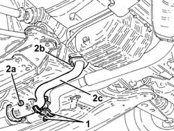
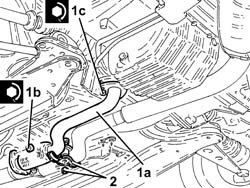

1076B84 right exhaust pipe between caralytic preconverter and converter r r
- Path
- Procedures > 10 ENGINE > 1076 EXHAUST PIPES AND SILENCERS > 1076B exhaust pipes and silencers > 1076B84 right exhaust pipe between caralytic preconverter and converter r r
- Kind
- repair procedure (removal / refitting; the operation number is the code)
- Applies to
- engines: 2.5 V6, 3.2 V6; all production periods
- Interactive page
- https://sloeber94.github.io/elrnDB-a156/en/#/3237576
Applies to: engines: 2.5 V6, 3.2 V6; all production periods; only with equipment: Euro 3
 Removing
Removing
 Refitting
RefittingPlace the vehicle on a ramp.
Proceed with the removal 7055B54 under-engine guard - r r .
1. Undo the bolt and remove the bracket joining the exhaust pipes between the preconverters and the catalytic converter.
2. Undo nuts (2a) and (2b) and remove the exhaust pipe between right preconverter and catalytic converter (2c).
Remove the gaskets.

Applies to: engines: 2.5 V6, 3.2 V6; all production periods; only with equipment: Euro 3
Refitting
Removing1. Refit the exhaust pipe between right preconverter and catalytic converter (1a) with gaskets, then secure by tightening nuts (1a) and (1c) to the specified torque.
 | Fastening | Component | Ø | Value (daNm) |
|---|---|---|---|---|
1b | Nut | RIGHT PRECONVERTER.CONVERTER PIPE/ | M8 | (Catalytic converter side) 2.5 ÷ 3.1 |
| Fastening | Component | Ø | Value (daNm) |
|---|---|---|---|---|
1c | Nut | RIGHT PRECONVERTER.CONVERTER PIPE/ | M8 | (Catalytic preconverter side) 2.5 ÷ 3.1 |
2. Place the bracket joining the exhaust pipes between the preconverters and the catalytic converter back in its housing and secure it using the bolt.

Applies to: engines: 2.5 V6, 3.2 V6; all production periods; only with equipment: Euro 3
Proceed with the refitting 7055B54 under-engine guard - r r .
Remove the car from the ramp.
Topics linked from this page (1)
Topics that link to this page (5)
- 1020D36 flywheel end oil seal - replace for manual gearbox with hydraulic selection versions
- 1024B11 engine flywheel - r r for manual gearbox with hydraulic selection versions
- 1810A28 clutch - r r for manual gearbox with hydraulic selection versions
- 2110A11 manual gearbox with differential - r r for versions with hydraulic selection
- 2127A70 support for control levers for manual gearbox with hydraulic selection and handbrake - r r